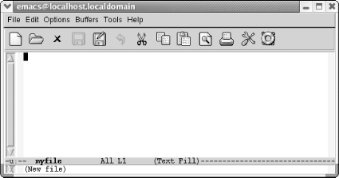

Conventions Used in This Book
This section covers the conventions used in this book.
Keystroke Notation
Emacs commands
consist of a modifier, such as Ctrl
or Meta, followed by one or two
characters. Commands shown in this book abbreviate Ctrl to C
and Meta to M:
- C-g
-
Hold down the Ctrl key and press
g.
- M-x
-
Hold down the Meta key and press
x.
Sometimes Meta is followed by a
literal hyphen character. In these cases, we spell out Meta:
- Meta -
-
Hold down the Meta key and press
-.
To complete a command you may need to press Enter. (This key may be labeled Return.)
- Enter
-
Press the Enter key.
- Esc
-
Can be used as an alternative to Meta. Press Esc, release it, then
press the next key.
A few mouse commands use the Shift
key as a modifier, often in combination with the Ctrl key. This is abbreviated as:
- S-right
-
Hold down Shift and click the right
mouse button.
- C-S-right
-
Hold down Shift and Ctrl and click the right mouse button.
All Emacs commands, even the simplest ones, have a full name; for
example, forward-word is equivalent
to the keystrokes M-f, and forward-char is equivalent to C-f. This tying of a command to a keystroke
combination is called a key binding. Some commands have only full
names, with no corresponding key binding.
When we discuss a command, we'll give both its full
name and the keystrokes (if any) that you can type to invoke it.
Command Tables
To find a group of commands quickly, look for tables in each section
that summarize commands. These tables are formatted like this:
|
Keystrokes
|
Command name
|
Action
|
|---|
|
C-n
|
next-line
|
Move to the next line.
| |
C-x C-fFile
 Open File Open File
|
find-file
|
Open a specified file.
| |
(none)
|
yow
|
Print ineffable wisdom from the Pinhead in the minibuffer.
|
The first column shows the default key binding for the command, the
second column shows the command's full name, and the
third column describes what the command does. For example, pressing
C-n (also known as the next-line command) moves the cursor to the
next line in the file. Some commands, like C-x
C-f, can also be reached through menus. If there is a menu
option for a particular command, it is given in
italics below the keystrokes for the command.
For example, you can use the find-file command by typing C-x C-f or by selecting Open File from the File menu. Sometimes you'll
see (none) in the keystrokes column, which
doesn't mean you can't use the
command, but rather that the command isn't bound to
particular keystrokes. To use commands with no keystrokes, type
M-x, followed by the
command's full name, and press Enter. (Try typing M-x
pong Enter sometime.)
Examples
Throughout the book, you'll find keystrokes to type,
followed by a screenshot showing the results.
|
Type: C-x C-f
myfile
| |

| |
Use the find-file command to open a
file or create a new file.
|
C-x C-f is in bold, indicating that
this is exactly what you type. myfile is
shown in constant width italics because you could substitute any
filename you choose and need not type exactly what you see here.
Typically, these screenshots come from a Linux system. We also
include screenshots taken on Mac OS X and Windows. When we show such
screenshots, we include an indication of the platform in the caption
for the screenshot.
Toward the end of the book, when we're discussing
programming modes, customization, and Lisp programming, screenshots
become rather unwieldy. We eventually use fewer of them. Instead, we
may show one or two lines of text. If it's relevant,
we show the cursor's position:
/* This is a c comment */
Font Usage
This book uses the following font conventions:
- boldface
-
Indicates operating system commands, Emacs keystrokes, command names,
and variables.
- italic
-
Indicates filenames, URLs, and new terms when first introduced.
- constant width
-
Indicates buffer names, Lisp code, C code, Emacs messages, and other
excerpts from programs.
- constant width italic
-
Indicates dummy parameters that you replace with an actual value. May
also be shown sometimes in angle brackets (<filename>).
|